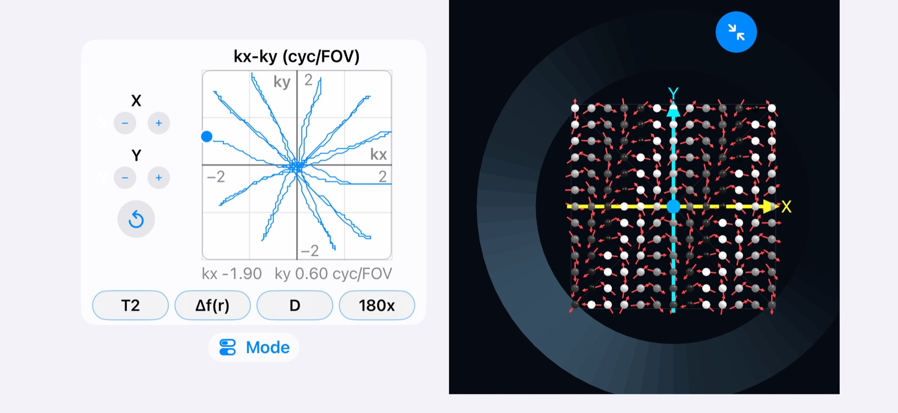

Spintuition
Spintuition kx-ky Pad
kx-ky Pad
Move through 2D k-space by hand and watch the spins wind into the matching phase pattern as you go.
The kx-ky pad is part of Direct Control mode. Like the other direct spin controls, it acts on every spin in the vector array at once.

Controls
| Control | Effect |
|---|---|
| Pad | Drag the dot to set kx and ky together, from −2 to 2 cycles per FOV on each axis. |
| X −/+ | Steps kx down or up in fine increments. |
| Y −/+ | Steps ky down or up in fine increments. |
| Reset | Returns to the center of k-space (kx = ky = 0). |
The line on the pad traces the path you have taken through k-space, and the current kx and ky values are shown underneath the pad.
What you are seeing
Each point on the pad is a position in k-space. kx winds the spin phase along x and ky winds it along y, in cycles across the field of view. At the center, all spins point the same way and the net signal is largest. Moving away from the center winds the spins into a pattern of stripes whose direction follows the angle of the dot and whose spacing shrinks as the dot moves farther out.
Try it
- Press M0, then set theta to 90° to tip the spins into the transverse plane.
- Drag the dot straight along the kx axis and watch stripes form across x.
- Drag it along ky, then diagonally, and watch the stripes turn to follow.
- Trace out an EPI-like raster or a spiral from the center, then compare with the EPI and Spiral examples.